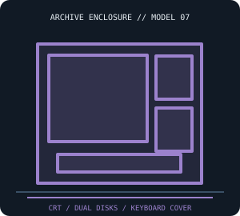

[ IDENTIFIED SYSTEM // KAYPRO II ]
Kaypro II Portable Computer Enclosure
Luggable desktop with a built-in 9-inch monochrome CRT and detached-from-case keyboard; typical cabinet envelope about 16 × 14 × 8 in (W × H × D).

MODEL / REVISION BOUNDARY: “Kaypro II” and later “Kaypro 2/84” naming can obscure materially different boards/drives. Photograph the chassis label, board number and drive labels before parts work.
Enclosure specifications
| Exact model / generation | Kaypro II portable computer, original 1982–83 configuration (not Kaypro 2/84, 4, or 10). |
|---|---|
| External dimensions | About 16 × 14 × 8 in (W × H × D), approximate cabinet dimensions; handle, keyboard cover, feet and production revisions affect exact measurements. |
| Form factor / board layout | Metal suitcase-style desktop portable with separate external keyboard stored in the cabinet cover; proprietary board/CRT orientation, not an ATX case. |
| Proprietary power supply | Internal Kaypro-specific mains supply serving logic and CRT; nonstandard harness and mounting. Not ATX compatible; verify voltage and supply revision before service. |
| External bays / ports | No standardized front/rear bay. Serial, parallel and video/keyboard ports are system interfaces; any printer or modem uses a separate enclosure. |
| Internal bays / mounts | Two 5.25-inch floppy mechanisms in the common dual-drive configuration; exact single/double-sided drive and controller configuration depends on production/upgrade history. |
| Service / compatibility | Use Kaypro II operators’ and service/technical literature. CRT and mains circuits are hazardous. Confirm drive geometry/controller and board revision; an upgraded unit may no longer match original boot media or power loading. |
| Revision identification | “Kaypro II” and later “Kaypro 2/84” naming can obscure materially different boards/drives. Photograph the chassis label, board number and drive labels before parts work. |
Service, restoration & fit notes
Use Kaypro II operators’ and service/technical literature. CRT and mains circuits are hazardous. Confirm drive geometry/controller and board revision; an upgraded unit may no longer match original boot media or power loading.
Internal Kaypro-specific mains supply serving logic and CRT; nonstandard harness and mounting. Not ATX compatible; verify voltage and supply revision before service.
- Record the full model/type label, board and power-supply assembly numbers, drive labels and manual revision before disassembly.
- Preserve original shields, brackets, hinges, feet, keyboard/CRT harnesses and proprietary fasteners with this exact enclosure; do not assume contemporary PC standards apply.
- Dimensions are approximate where noted; measure the actual specimen and leave clearance for cables, vents, lids/handles and attached peripherals.
Manufacturer & archival manual citations
- Kaypro II manuals collection — Internet ArchiveArchive collection of Kaypro II model user/service documentation; select the matching issue.
- The Kaypro II User’s Guide — Internet ArchiveKaypro operator guide; consult service documentation for electrical repair.
Manuals may cover only a stated revision or configuration; compare the title page and machine labels before applying procedures.